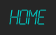
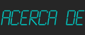
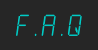
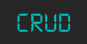

<nav class="navbar navbar-expand-lg navbar-dark bg-dark">
  <div class="container-fluid">
    <button
      class="navbar-toggler"
      type="button"
      (click)="togglerThirdExample.toggle()"
      aria-controls="navbarTogglerDemo03"
      aria-expanded="false"
      aria-label="Toggle navigation"
    >
      <i class="fas fa-bars"></i>
    </button>
    <a class="navbar-brand" href="#">
      
    </a>
    <div
      class="collapse navbar-collapse"
      id="navbarTogglerDemo03"
      mdbCollapse
      #togglerThirdExample="mdbCollapse"
    >
      <ul class="nav justify-content-center">
        <li class="nav-item">
          <a class="nav-link active" aria-current="page" routerLink="home" routerLinkActive="active"
            ></a>
        </li>
        <li class="nav-item">
          <a class="nav-link active" aria-current="page" routerLink="acercade" routerLinkActive="active"
            ></a>
        </li>
        <li class="nav-item">
          <a class="nav-link active" aria-current="page" routerLink="contacto" routerLinkActive="active"
            ></a>
        </li>
        <li class="nav-item">
          <a class="nav-link active" aria-current="page" routerLink="faq" routerLinkActive="active"
            ></a>
        </li>
        <li class="nav-item">
          <a class="nav-link active" aria-current="page" routerLink="crud" routerLinkActive="active"
            ></a>
        </li>
      </ul>
     
    </div>
  </div>
  <div class="d-flex flex-row-reverse">
    <a routerLink="ingreso"><i class="fas fa-user icon icono"></i></a>
    <a routerLink="wok"><i class="fas fa-shopping-cart icon icono"></i></a>
  </div>
</nav>
